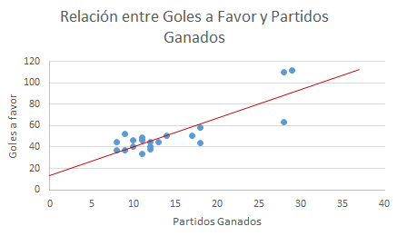

Acerca de HRegLinSimple
Microservicio en el que mediante el uso de la técnica estadística de regresión lineal simple se busca determinar si existe o no relación causal entre una variable dependiente (Y) con un conjunto de variables explicativas (X), con la finalidad de determinar la influencia que una variable independiente (X) ejerza sobre una variable dependiente (Y).
* Es de importancia recordar que con esta herramienta derivado de la ecuación de la recta que grafiquemos, se podrá pronosticar a futuro el comportamiento de la variable dependiente en el tiempo indicado.

Imagen A: Muestra el método de regresión lineal simple aplicado en un caso en específico.

Imagen B: Describe el procedimiento de ajuste de los datos graficados a una línea recta (regresión lineal).
Aplicaciones
- Estadística de regresión lineal simple
- Minería de datos
- Aprendizaje automático
- Inteligencia Artificial
Especificación técnica
- Servicios: WEB API
- URL: 192.168.100.3:9090/harpa/hreglinsimp
- Métodos: HTTP REST POST
Nota: Este método puede ser combinado con otros métodos de análisis de datos para un mayor enfoque y estudio de la información requerida.
| Glosario | |
| Otras referencias | |
| Videos |
- Caso de uso
- HTTP
- Python
Ejemplo de uso
El problema se centra en determinar la relación causal entre las ventas de productos con respecto a los ingresos que la población percibe, conformado por la variable de ventas (dependiente) y la variable de población(independiente).
Entrada:
{
"vars":
{
"Población": [2,6,8,8,12,16,20,20,22,26],
"Ventas": [58,105,88,118,117,137,157,169,149,202],
}
}
Salida:
{
"output": {
"exec": {
"funcion": "HRegLin",
"horafin": "2019-04-11 13:20:48.288488",
"horainicio": "2019-04-11 13:20:48.120238",
"tiempoexec": "0:00:00.168250"
},
"result": {
"vars": {
"b0": 60.0,
"b1": 5.0,
"r2": 0.9027336300063571
}
"attach": {
"content": {
"name": "hreglin.svg",
"type": "image/svg+xml",
"content":
}
}
}
}
}
*Nota: Para aplicar este método, es importante que los datos tengan un patrón de linealidad.
Llamada a hreglinsimple
Ejemplo convencional de la llamada HTTP al microservicio hreglin.
Llamada desde Python?
Copia, pega y ejecuta!